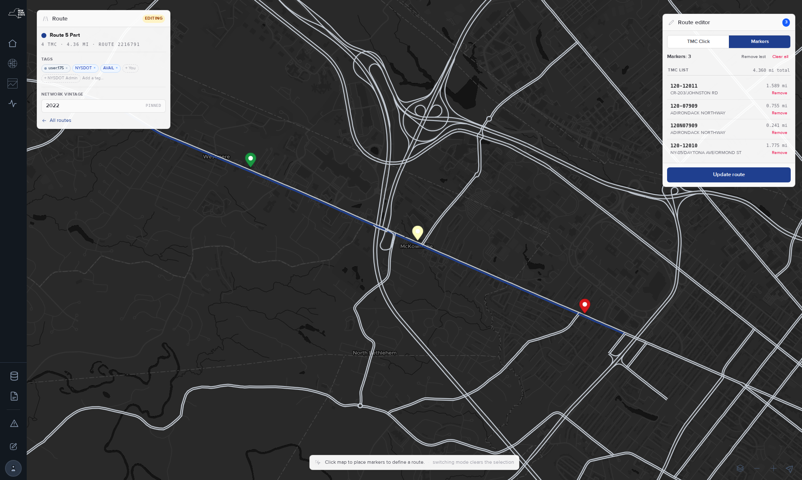

Create a route.
A route is a named, ordered list of road segments (TMCs). Build one on the Route Creation map by clicking segments, typing codes or dropping markers, then save it with a name and tags. Every report and comparison starts from a saved route.
Before you start
Sign in. Open Reports and select New route; Route Creation is not in the side navigation, and the address /route_creation is the other way in. The page is one map with the network in grey and two panels: Route, naming the route you are making, and Route editor, holding the tools. Each direction of a road is its own set of segments, so know which you want.
Steps
- Zoom to the road with the map's zoom buttons. A double-click does not zoom: it selects a segment and deselects it again. The mouse wheel does not zoom this map.Segments become clickable lines. Hovering one shows its code.
- Keep TMC Click, the default mode, and click each segment in the direction of travel. Clicking a selected segment removes it.The segment turns blue and a row appears in TMC list: code, miles and the cross street it ends at. TMCs: counts up and the total miles follow.
- To add a segment you cannot see, type its 9-character code in TMC search and select Add, or press Enter.The map centres on the segment and the row appears. If the code does not exist the panel reads TMC not found and Add stays disabled.
- Or select Markers and click the map at two or more points along the road. Drag a marker to move it.The panel reads Finding a route between your markers…, then lists the segments a routing service matched between them. Switching modes clears the selection.
- Tidy the list. Hover a row to highlight its segment. Select Remove on a row, Remove last for the newest segment or marker, or Clear all to start over.The list, the count and the total update.
- Check the order. The list stores segments in the order you clicked them, not in road order.
- Select Save route.The Save new route dialog opens with Name, Description and Tags.
- Name the route so it reads well as a chart legend: road, direction, end points. Add a description if the extent needs explaining.
- Tag it. The dialog suggests your own tag and one tag per agency group you belong to as + chips; select the ones that apply, or type a county, region or project tag in Add a tag….Tags are how other people find the route. The panel also shows the route's Network vintage, pinned to the map the route was built on; a segment from another vintage cannot be added, and Add stays disabled. See Find, edit, tag and share routes.
- Select Save.The dialog closes and the address gains
?route_id=and the new route's number. The Route panel shows an editing badge and the count, miles and route number. The button now reads Update route. - To edit later, open the same address, change the segments, tags or name, and select Update route. The dialog reads Update route and warns in red that saving overwrites the route.

Settings
Every control on the Route Creation page.
| Control | What it does | Values | Default |
|---|---|---|---|
| TMC Click | Markers | How segments are chosen: one click per segment, or waypoints matched by a routing service | Two modes; switching clears the selection | TMC Click |
| TMC search · Add | Adds a segment by its code; reads Remove if the code is already in the route | A 9-character TMC code; TMC Click mode only | Empty |
| Remove last · Clear all | Drops the newest segment or marker; empties the route in both modes | — | — |
| Name · Description | The route's title, inherited by every report that uses it, and free text | Text | Empty |
| Tags | Who owns the route and where it is | Suggested chips for you and your agency groups; typed county:, region:, agency: or free-text tags | Your own tag and your agency tags, offered as suggestions |
| Network vintage | The map year the routing service matches markers against | Fixed, shown as 2022 · pinned | 2022 |
| All routes | Leaves the tool for the Reports page | — | — |
Limits and gotchas
- Two maps are in play. Clicks select segments from the 2026 network on screen. Markers are matched against the 2022 network, the only vintage the routing service resolved reliably in a July 2026 test; 2016, 2018 and 2023 to 2026 returned nothing. A route can hold a code a later year's data lacks, and a report for that year charts one segment fewer. How routes bind to a vintage explains.
- With
?route_id=in the address every save overwrites that route. The button and the dialog say so; there is no confirmation. Explore from a fresh/route_creationaddress. - Click order is stored as clicked. Nothing sorts the list into road order.
- The hover popup shows the segment code only, not the road name.
- There is no folder and no date on a route. Grouping is tags; dates live on the report. Folders from the earlier tool were not carried over.
- All routes opens the Reports page. Its address ends in a #routes anchor the current Reports page no longer carries, so it lands at the top of that page.
Troubleshooting
I cannot find the tool that creates a route
It is New route in the header of the Reports page, not an item in the side navigation. The address /route_creation also opens it. Asked in August 2026; see References.
A marker route has a blank segment
The routing service can return a segment with no code or length in a matched path; northbound I-787 near Albany was reported in May 2026. Switch to TMC Click and add the missing segment by clicking it or by typing its code in TMC search.
The page showed an error on first load
"Unable to complete your request at the moment. Please try again later." was reported on an NPMRDS map page in September 2026; the second attempt succeeded. Reload the page. If it repeats, report it with the time.
I cannot see my markers
Markers mode can match a route without drawing the start and end pins, reported in September 2026. The TMC list still fills. Use Remove last to back out the newest point.
What next
- Find, edit, tag and share routes
- Build and edit a report
- Start a report from a template
- Routes data · the datasheet
- The TMC network and its vintages
References
- Route Creation plugin code, 2026-09-03: RouteEditor (mode toggle, counts, Remove last · Clear all, TMC search · Add · TMC not found, Save route / Update route), RouteIdentityPanel (Route, editing, Network vintage 2022 pinned, All routes), SaveRouteModal (Save new route / Update route, overwrite warning, Name · Description · Tags, Cancel · Save / Update), ModeHintPill; the save payload (name, description, tmc_array, tags, empty metadata; markers not written); the 2022 routing default and its 2026-07-23 test.
- Live Route Creation page, published 2026-09-01: one map section drawing the 2026 network, hover field the segment code.
- Route Creation design record, revision 1 (2026-09-01), and Routes data: click order stored; overwrite semantics; folders and dates deferred.
- Platform route-building guide (creating-routes): mouse-wheel zoom disabled; hover shows the code only; the Add button of 2026-07-27.
- Ticket 2210869 (2026-08-11) "I can't find the tools needed to create a new route"; ticket 2217675 (2026-09-02) markers not shown; ticket 2217781 (2026-09-03) first-load error; running fix 2172492 (2026-05-14) blank TMC on routing.